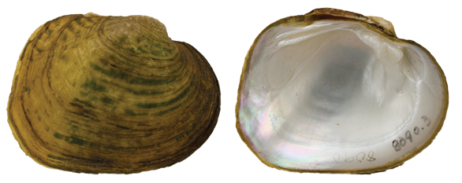

Cyclonaias petrina (Gould, 1855)
Texas Pimpleback

Cyclonaias petrina – Llano River [Colorado River drainage], length 46.0 mm.
Identification
Shell structure: moderately to very thick, compressed or inflated depending on habitat and stream position.
Shell outline: subquadrate, subrhomboidal or oval.
Posterior ridge: rounded or slightly angular near the umbo and rounded near the margin, sometimes biangulate.
Shell color: yellow-green, brown-green, or brown; surface dull to subglossy.
Rays: may have green blotches that resemble irregular rays.
Shell texture: shell without sculpture except for posterior slope which may have angular crenulations or parallel ridges.
Umbo: narrow to broad and moderately high above the hinge line; umbo cavity deep.
Umbo sculpture: rows of ridges, which often form a distinct cross-hatching pattern.
Pseudocardinal teeth: large, triangular, rough, 2 divergent teeth in the left valve, typically with the posterior tooth being smaller than the anterior, 1 tooth in the right valve.
Lateral teeth: short to moderately long, thick, straight to slightly curved, 2 in left valve, 1 in right valve.
Interdentum: short, wide, and thick.
Nacre: white to bluish-white, iridescent posteriorly.
Other: not sexually dimorphic.
General Range
Colorado River basin of central Texas.
Habitat
Medium-size streams to large rivers primarily in riffles and runs. Often found in substrates composed of sand, gravel, and cobble, including mud-silt or gravel-filled cracks in bedrock slabs.
Legal listing status
USFWS: Candidate